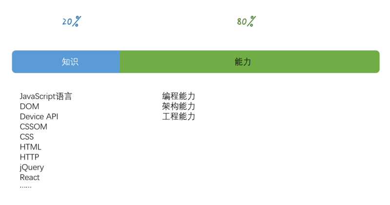

前端的自我修养
今天给大家分享的主题是前端的自我成长，这是一个关于成长的话题
很多人都有这样的感觉：听了很多技术圈子的分享，有的有深度，有的循循善诱，深入浅出，但是呢，几年下来，到底哪些用上了，哪些对自己真的有帮助了?反而有些模糊
2015 年我在不同的场合分享了很多内容：有移动端的性能、有适配、有 Web vs Native，也有 hybrid，但是其实我一直比较担心，真正有深度的内容，其实面向的是比较小众的群体，比如说 Hybrid，其实它在大部分公司里面，是只能用现成的
前端其实是个特别苦逼的职业，因为前端技术一直革命的特别快，新技术、新技巧在不断地被发明出来。之前我有一个朋友，他讲说他对自己的认知是了解前端、熟悉前端、精通前端、熟悉前端、不懂前端。为什么呢，他说当他觉得自己对前端所有的东西觉得无所不知，无所不能的时候，忽然看到了一段代码，他完全无法理解，于是整个世界就崩塌了，从此再也不敢说自己会前端
我就跟他说，这里，缺少的是一种正确的方法，你觉得无所不知、无所不能的标准是什么，是工作中很久没遇到解决不了的问题么？他说还真是这样。我就又问他，那你系统学过前端么？他想了想，还真没学过，大学里不开这个课。的确如此，到目前为止，还没有任何一个大学会教前端，倒是有些培训班，会讲网页开发三剑客
关于成长，首先我得发一个免责声明，不是我对我讲的内容没有信心，而是成长是自己的事，英文有句话，在外企工作的人会经常听到，叫做：
You are the owner of your career.
你是你职业发展的责任人。这句话潜台词是，你（不是你老板，也不是你爸妈，也不是你女朋友）是你职业发展的责任人

我们讲前端成长，我认为，主要在两个方面，一部分是“能力”，一部分是“知识”。我个人的观点，能力占百分之八十，知识占百分之二十
从这个图上，大家可以看到，其实我们认为变化快的东西，最新出来的 Angular、React、ES2015，其实都在知识里面，知识又分成两部分，一部分我把它叫做标准，它是相对而言比较稳定的，很少会出现一个标准被推翻的事情。另一部分则是技术，像是 jQuery、React 这些框架啦，像是 MVC、FLUX 这些架构的东西，这些东西是由各个公司主导的，变化就非常快，你看 Grunt 发展了没多久，Gulp 就来挑战他了，然后又有 browserify、webpack 这些东西
而我认为占重点的能力，则是非常稳定的，我认为能力是三大块：编程能力、架构能力、工程能力
编程能力，就是用代码解决问题的能力，你编程能力越强，就能解决越复杂的问题，细分又有调试、算法、数据结构、OS 原理等这些的支撑，你才能解决各种麻烦的问题
架构能力，则是解决代码规模的问题，当一个系统足够复杂，你会写每一块，能解决每一个问题，不等于你能搞定整个系统，这就需要架构能力，架构能力包含了一些意识，比如解耦、接口隔离，也包含认识业务建立抽象模型，也有一些常见的模式，比如经典的 MVC，还有设计层面，面向对象、设计模式等等
最后工程能力，则是解决协作的问题，当系统规模更大，光靠一个人，是没办法完成的，如何保证几个高手互相能够配合好？如何保证项目里面水平最差的人不拖后腿？这个工程化建设，往往会跨越多个业务，以汇报关系上的团队为单位来做。包括前后端解耦，模块化，质量保证，代码风格，等等
其实不难看出来，这三项，其实是有顺序的，低等级、小团队，编程能力一项就能应付，越资深的前端，越大的公司和团队，越是需要后面的技能，但是这里我要强调一点，其实资深前端，大团队，对能力的需求，是既要还要——不是说资深的前端，编程能力就可以变差
社区总会有一些声音，对工程能力，对架构能力持有一种抵触的态度，觉得比较虚，觉得不需要。实际上以某些人所在的岗位来说，也没错，毕竟公司、团队的状态确实可能用不到，但是以个人成长的角度来看，就是大错特错